PinCFlow.jl
Introduction
PinCFlow is an atmospheric flow solver that was designed for performing idealized simulations. It integrates the Boussinesq, pseudo-incompressible and compressible equations in a conservative flux form (Klein, 2009; Rieper et al., 2013), using a a semi-implicit method that combines explicit and implicit time-stepping schemes (Benacchio & Klein, 2019; Schmid et al., 2021). Spatially, the equations are discretized with a finite-volume method, such that all quantities are represented by averages over grid cells and fluxes are computed on the respective cell interfaces. The grid is staggered so that the velocity components are defined at the same points as the corresponding fluxes of scalar quantities. PinCFlow operates in a vertically stretched terrain-following coordinate system based on Gal-Chen and Somerville (1975a), Gal-Chen and Somerville (1975b) and Clark (1977).
The Lagrangian WKB model MSGWaM is interactively coupled to PinCFlow, so that unresolved gravity waves may be parameterized in a manner that accounts for transience and horizontal propagation. The resolved fields are updated with tendencies computed by MSGWaM at the beginning of every time step. A description of the theory behind PinCFlow-MSGWaM can be found in Achatz et al. (2017) and Achatz et al. (2023). For a numerical perspective and more information on the development, see Muraschko et al. (2014), Boeloeni et al. (2016), Wilhelm et al. (2018), Wei et al. (2019) and Jochum et al. (2025).
User guide
Installation
To install PinCFlow, first make sure you have installed Julia. You can then clone this repository with
git clone git@github.com:Atmospheric-Dynamics-GUF/PinCFlow.jl.gitand set up the project environment by running
julia --project -e 'using Pkg; Pkg.instantiate()'in the root directory of your clone.
Running the model
As a minimal example, the script
using PinCFlow
integrate(Namelists())runs PinCFlow in its default configuration, if executed with
julia --project script.jlin the root directory of the repository. This simulation will finish comparatively quickly and won't produce particularly interesting results, since PinCFlow simply initializes a $1 \times 1 \times 1 \, \mathrm{km^3}$ isothermal atmosphere at rest with $3 \times 3 \times 3$ grid points and integrates the governing equations over one hour. A more complex configuration can be set up by providing namelists with changed parameters. For instance, running the script
# examples/submit/periodic_hill.jl
using PinCFlow
@ivy if length(ARGS) == 0
output_file = "./pincflow_output.h5"
elseif length(ARGS) == 1
output_file = ARGS[1] * "/pincflow_output.h5"
else
error("Too many arguments to the script!")
end
atmosphere = AtmosphereNamelist(; backgroundflow_dim = (1.0E+1, 0.0E+0, 0.0E+0))
domain = DomainNamelist(;
sizex = 40,
sizey = 1,
sizez = 40,
lx_dim = 2.0E+4,
ly_dim = 2.0E+4,
lz_dim = 2.0E+4,
)
grid = GridNamelist(; mountainheight_dim = 1.0E+1, mountainwidth_dim = 1.0E+4)
output = OutputNamelist(; output_variables = (:w,), output_file = output_file)
sponge = SpongeNamelist(; spongelayer = true)
integrate(Namelists(; atmosphere, domain, grid, output, sponge))
yields a 2D simulation with an initial wind of $10 \, \mathrm{m \, s^{- 1}}$ that generates a mountain wave above a periodic hill. The vertical wind is written to the output file pincflow_output.h5 in the directory specified by an additional argument to the script (or the current directory, if that argument is omitted). More involved examples are given in the "Examples" section of the documentation. A description of all namelists and their parameters is provided in the "Reference" section.
If you want to run PinCFlow in parallel, make sure you are using the correct backends for MPI.jl and HDF5.jl. By default, the two packages use JLL backends that have been automatically installed. If you want to keep this setting, you only need to make sure to use the correct MPI binary (specifically not that of a default MPI installation on your system). You can do so by running
mpiexec=$(julia --project -e 'using MPICH_jll; println(MPICH_jll.mpiexec_path)')
${mpiexec} -n ${tasks} julia --project script.jlwith tasks set to the number of MPI processes. Note that in script.jl, the parameters npx, npy and npz of the namelist domain, which represent the number of MPI processes in the three dimensions of physical space, need to be set such that their product is equal to tasks.
However, if you plan to run PinCFlow on a cluster, you may want to consider using a provided MPI installation as backend. In that case, the MPI preferences need to be updated accordingly and the HDF5 backend has to be set to a library that has been installed with parallel support, using the chosen MPI installation. This can be done by running
julia --project -e 'using MPIPreferences; MPIPreferences.use_system_binary(; library_names = ["/path/to/mpi/library/"])'
julia --project -e 'using HDF5; HDF5.API.set_libraries!("/path/to/libhdf5.so", "/path/to/libhdf5_hl.so")'with the paths set appropriately (more details can be found in the documentations of MPI.jl and HDF5.jl). Note that this configuration will be saved in LocalPreferences.toml, so that the new backends will be used by all future scripts run in the project. By running
julia --project -e 'using MPIPreferences; MPIPreferences.use_system_binary()'
julia --project -e 'using HDF5; HDF5.API.set_libraries!()'you can restore the default backends. Having configured MPI.jl and HDF5.jl to use installations on your system, you can run
mpiexec -n ${tasks} julia --project script.jlwith mpiexec being your chosen system binary. For users who would like to run PinCFlow on Goethe or Levante, shell-script examples are provided in examples/submit.
Visualizing the results
PinCFlow uses parallel HDF5 to write simulation data. By default, the path to the output file is pincflow_output.h5 (from the directory in which the run script is executed). This may be changed by setting the parameter output_file of the namelist output accordingly. The dimensions of most output fields are (in order) $\widehat{x}$ (zonal axis), $\widehat{y}$ (meridional axis), $\widehat{z}$ (axis orthogonal to the vertical coordinate surfaces) and $t$ (time). Ray-volume property fields differ slightly in that they have an additional (spectral) dimension in front and a vertical dimension that includes the first ghost layer below the surface. To specify which fields are to be written, set the parameters output_variables, save_ray_volumes and prepare_restart of the namelist output accordingly (more details are given in the "Reference" section of the documentation).
For the visualization of simulation results, we recommend using PythonPlot.jl. A function that configures PythonPlot.jl to use a preset style, as well as one that facilitates the generation of symmetric contour plots, are exported by PinCFlow. The script
# examples/visualization/periodic_hill.jl
using HDF5
using PythonPlot
using LaTeXStrings
using PinCFlow
set_plot_style()
# Import the data.
@ivy if length(ARGS) == 0
data = h5open("./pincflow_output.h5")
elseif length(ARGS) == 1
data = h5open(ARGS[1] * "/pincflow_output.h5")
else
error("Too many arguments to the script!")
end
# Set the grid.
x = data["x"][:] ./ 1000
z = data["z"][:, 1, :] ./ 1000
x = x .* ones(size(z))
# Get the vertical wind.
w = data["w"][:, 1, :, end]
# Close the file.
close(data)
# Create the plot.
(levels, colormap) = symmetric_contours(minimum(w), maximum(w))
contours = contourf(x, z, w; levels = levels, cmap = colormap)
xlabel(L"x\,\left[\mathrm{km}\right]")
ylabel(L"z\,\left[\mathrm{km}\right]")
colorbar(contours; label = L"w\,\left[\mathrm{m\,s^{-1}}\right]")
savefig("examples/results/periodic_hill.png")
clf()
is an example for how to visualize the vertical wind at the end of a simple mountain-wave simulation performed with the script introduced above. Once again, the directory which the output file has been saved to is given as an additional argument to the script. The resulting plot is displayed below.

Developer guide
Workflow
The code is shared in a GitHub repository. Any contributions to the code should adhere to the following workflow.
If you are new to the project, create a remote development branch for your contributions (name it such that others can identify it as your branch) and clone the repository.
Make your changes on your local development branch.
Pull recent changes made on the remote main branch into your local main branch and merge it into your local development branch, resolving merge conflicts if necessary.
Ensure that the model is stable and that all canonical tests reproduce the sample results.
Push your changes to your remote development branch.
Request to merge your remote development branch into the remote main branch.
Writing code
Contributions to the code should respect the following rules.
Put every module, composite type (including constructor methods) and function into a file on its own, with the file name matching that of the object. Create a folder for every module (see below for a diagram of PinCFlow's modular structure).
Variables that are communicated between functions should be stored at an appropriate level of the
Stateinstance (see below for a diagram of PinCFlow's model-state structure).Use type parameters to declare the types of all composite-type fields.
Declare the types of all method arguments and the return types of all methods that return something other than
nothing.Use PinCFlow's
@ivyin front of expressions that access elements of arrays/tuples. Always apply this macro to the outermost expression possible but do not create new blocks for this purpose.Do not use Unicode.
Use
CamelCasefor the names of modules and types. Use single capital letters for type parameters. For all other objects, usesnake_case(in case the name only contains (preferably whole) words, e.g.vertical_wind) andsquashedcase(in case the name is mathematical, e.g.whatfor $\widehat{w}$).

Writing documentation
Contributions to the code should always be accompanied by corresponding contributions to the documentation, respecting the following rules.
Write a docstring for every module, function and type.
Module docstrings:
Include the exact full signature within a Julia code block, followed by a single descriptive (pseudo-)sentence and (if needed) additional paragraphs with more details.
List links to imported modules in a
# See alsosection, with one bullet for each.
Function docstrings:
For every method, include the exact full signature within a Julia code block, followed by a single, descriptive sentence in imperative form and (if needed) additional paragraphs with more details.
List all positional and optional arguments with descriptions (but without types and default values) in an
# Argumentssection, with one bullet for each.List all keyword arguments with descriptions (but without types and default values) in a
# Keywordssection, with one bullet for each.List links to constructors/functions that are called in any of the function's methods in a
# See alsosection, with one bullet for each.
Type docstrings:
Include the exact full signature within a Julia code block, followed by a single descriptive (pseudo-)sentence and (if needed) a additional paragraphs with more details.
If the type is composite, include the exact full signature within a Julia code block, followed by a single, descriptive sentence in imperative form and (if needed) additional paragraphs with more details, for each explicitly defined constructor method.
If the type is composite, list all fields with their type restrictions and descriptions in a
# Fieldssection, with one bullet for each.If the type is composite, list all positional and optional arguments of the explicitly defined constructor methods with descriptions (but without types and default values) in an
# Argumentssection, with one bullet for each.If the type is composite, list all keyword arguments of the explicitly defined constructor methods with descriptions (but without types and default values) in a
# Keywordssection, with one bullet for each.If the type is composite, list links to constructors/functions that are called in any of the explicitly defined constructor methods in a
# See alsosection, with one bullet for each.
Use single backticks to identify code and double backticks to identify equations. Use LaTeX escape sequences instead of Unicode characters.
Place the starting and ending
"""characters on lines by themselves.
Markdown syntax
Markdown code should use the following syntax.
Headings:
# Heading level 1 ## Heading level 2 ### Heading level 3 #### Heading level 4 ##### Heading level 5 ###### Heading level 6Paragraphs:
This is the first paragraph. This is the second paragraph.Emphasis:
This sentence contains *italic*, **bold** and ***italic bold*** words.Block quotes:
This is a sentence above a block quote. > This is the first paragraph of a block quote. > > > This is a nested block quote. > > This is the second paragraph of a block quote. This is a sentence below a block quote.Unnumbered lists:
This is a sentence above an unnumbered list. - This is the first paragraph of the first item. - This is the first item of a nested list. - This is the second item of a nested list. This is the second paragraph of the first item. - This is the second item. This is a sentence below an unnumbered list.Numbered lists:
This is a sentence above a numbered list. 1. This is the first paragraph of the first item. 1. This is the first item of a nested list. 1. This is the second item of a nested list. This is the second paragraph of the first item. 1. This is the second item. This is a sentence below a numbered list.Inline code:
This sentence contains inline `code` and inline `` `nested code` ``.Code blocks:
This sentence contains the code block ```julia if true println("true") end ``` and other stuff. This sentence contains the nested code blocks ``````markdown ```julia if true println("true") end ``` `````` and other stuff.Horizontal rule:
---URLs and email addresses:
This sentence contains the URL <http://example.com> and the email address <fake@example.com>.Links:
This sentence contains a [link](http://example.com).Images:
Backslash escapes:
This sentence contains the backslash escapes \\\`\*\_\{\}\[\]\(\)\#\+\-\.\!.Inline math:
This sentence contains the equation $x^2 + y^2 = z^2$.Centered math:
This sentence contains the equation $$x^2 + y^2 = z^2$$ and other stuff.
In docstrings, the following syntax elements are different.
Inline math:
This sentence contains the equation ``x^2 + y^2 = z^2``.Centered math:
This sentence contains the equation ```math x^2 + y^2 = z^2 ``` and other stuff.
Moreover, every backslash used for LaTeX commands in equations has to be doubled.
Building and accessing the documentation
The code uses Documenter.jl. To build the documentation, run
julia --project=docs -e 'using Pkg; Pkg.develop(; path = "."); Pkg.instantiate()'
julia --project=docs docs/make.jlin the root directory of the repository. The documentation will be generated in the docs/build directory. To view it, open docs/build/index.html in a web browser or preview the file in Visual Studio Code with Live Preview.
List of publications
Initial flow solver: Rieper et al. (2013)
Initial gravity-wave scheme: Muraschko et al. (2014)
Gravity-wave breaking scheme: Boeloeni et al. (2016)
Gravity-wave theory: Achatz et al. (2017)
Coupling of the flow solver and gravity-wave scheme: Wilhelm et al. (2018)
Horizontal propagation and direct approach in the gravity-wave scheme: Wei et al. (2019)
Semi-implicit time scheme: Schmid et al. (2021)
Extended gravity-wave theory: Achatz et al. (2023)
Terrain-following coordinates & orographic source: Jochum et al. (2025)